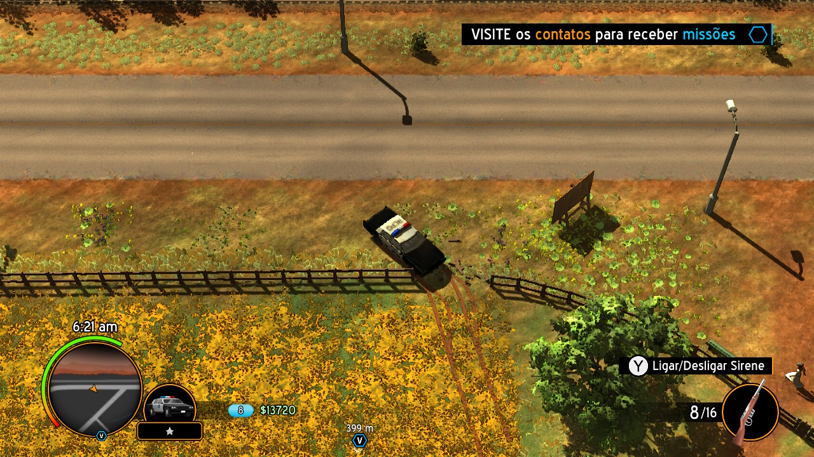
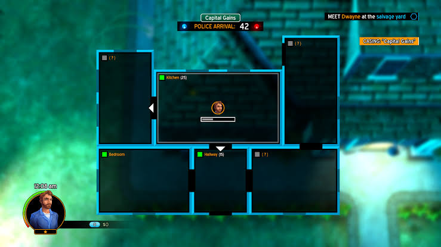
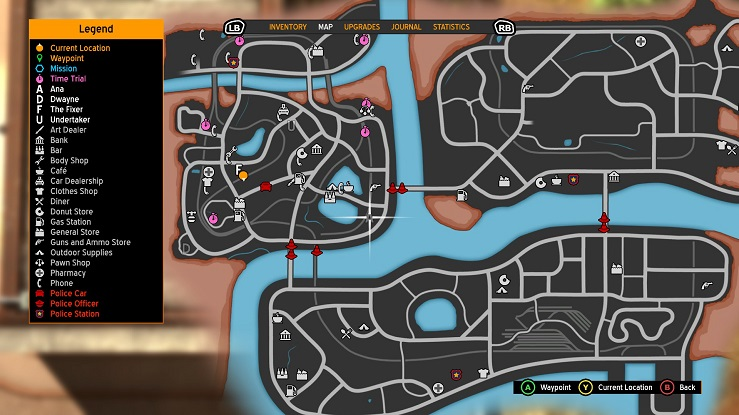

American Fugitive é jogo de mundo aberto com visão top-down, com vários objetos destrutíveis e carros com física única.

Clique na imagem para vizualizar em tamanho total
Quando vi o trailer de anúncio de American Fugitive pela primeira vez, pensei comigo mesmo, "parece uma cópia de Gta genérica", porém quando visualizei alguns previews de gameplay, percebi que embora o jogo tenha inspirações muito claras em Gta's old-schools ele traz algumas novidades interressantes.
Primeiro com seu sistema de arrombar casas, que a primeira vista tende a parecer "estranho", mas que ao longo do jogo se torna familiar e interressante, embora não seja perfeito.
Clique na imagem para vizualizar em tamanho total
A imagem acima representa o interior de uma das casas que invadimos, note que ao lado do nome de cada cômodo há uma interrogação entre parênteses, quando entramos num destes cômodos esta interrogação será substituída por um número, que irá indicar quantos segundos (dentro do jogo) serão nescessários para vasculhar esse cômodo, este tempo varia de acordo com o tamanho do cômodo, onde podem ser encontrados dos mais variados itens desde um esfregão inútil, até cofres com um bom montante em dinheiro.
Toda vez que voçê invade alguma casa, aparece um contador (exceto se você abrir a porta com lockpick ou com a chave da casa) que indica em quanto tempo a polícia irá chegar, então é nescessário prestar atenção em quais cômodos voçê irá entrar e vasculhar antes da polícia chegar e tirar voçê a força da casa.
Segundo com seu vasto sistema de upgrade do personagem através de skills points, que podem deixar o protagonista com a barra de vida maior, a barra de stamina maior, o inventário maior, permitem que possamos consertar o carro que estamos dirigindo, ou se você é complescionista adiciona um sensor, que emite sinais sonoros quando você se aproxima de tesouros escondidos, (Dica: deixe sempre uma pá no seu inventário).
E terceiro e nem por isso menos importante, cada modelo de carro tem uma dirigibilidade diferente, alguns tem o controle mais firme, como um jipe militar 4x4, outros derrapam muito facilmente, principalmente em terrenos de terra.
O sistema de estrelas de procurado também é um pouco (só um pouco) diferente de Gta, onde voçê só é procurado se fizer uma massacre na cidade, ou simplesmente olhar meio torto para uma policial, aqui quando um NPC vê que você derrubou um poste de energia elétrica, alguma placa, ou está invadindo uma propriedade, ou enxerga voçê carregando uma arma, ele entra em contato com a polícia. Que irá procurar por voçê de acordo com a descrição dada pelo NPC, ou seja pela cor da sua roupa,ou pela cor e modelo de carro que voçê está dirigindo.
Para se livrar das estrelas de procurado é muito fácil, basta se esconder, ou trocar de roupa, você pode também pintar o carro em uma funilaria, mas há somente uma em cada cidade, o que torna essa a opção menos viável, a menos que você esteje perto de uma é claro.
Gostaria de mencionar que o game tem uma "pitadinha" de rogue-like, que consiste no seguinte: quando voçê morre numa missão você pode recomeçar a missão (o que é recomendado) ou continuar, porém caso a segunda opção seja escolhida, o jogo "simula" que você foi preso e fugiu novamente da prisão, sendo assim você perde TODOS os itens do seu inventário, que por sorte são facilmente recuperáveis explorando a cidade, e também há uma skill que pode ser desbloqueada, que faz com que sempre tenha uma caixa de suprimentos, com armas, roupas e itens (dependendo de quantas vezes voçê upou essa skill) ao lado do local que o personagem da respawn, o mesmo vale caso você morra fora de missões.
História
A história do jogo não é lá essas coisas, mas pelo menos é interressante, inicia com o protagonista de nome Riley, recebendo um telefonema de seu pai às 3 horas da madrugada, pedindo-lhe para ir à sua casa. Os dois tem uma pequena discussão, o pai desliga o telefone, Riley então vai a casa de seu pai (que fica a poucos metros de distância) e encontra um carro Buzzard GTX (um carro que seu pai jamais conseguiria comprar) em frente a casa, bate à porta, chama pelo pai, mas não tem nenhuma resposta. Então o protagonista invade a casa á procura de seu pai, encontrando-o morto no chão, neste exato momento chega a polícia e prende Riley sem nem deixá-lo explicar direito.
O protagonista foge da prisão após um tumulto que distraiu os guardas, e começa pela busca do culpado pelo assassinato de seu pai.
Durante essa busca a história vai se desenrolando, com Ridley conhecendo pessoas que aparentemente tem algo relacionado ao assassinato, fazendo missões para eles, para tentar entender a relação entre eles e seu pai.
Mapa
O mapa é constituído por 3 pequenas cidades, que de início tem as fronteiras bloqueadas pela polícia (devido a fuga de Riley da prisão), que serão liberadas de acordo com o andar da história.
Clique na imagem para vizualizar em tamanho total
Aspectos técnicos
Gráficos
Os gráficos são relativamente bons, levando em consideração que há muitos objetos destrutíveis, ou que podem ser movidos de lugar. A parte mais fraca na versão de Switch é a falta algum tipo de anti-aliasing pois o jogo tem bastante serrilhado, o que acaba tirando um pouco do "charme" do visual do jogo, que tenta passar a impressão de um HQ com bordas escuras e bem definidas.
Desempenho
O desempenho é aceitável, no lançamento o jogo estava quase injogável, onde o jogo tinha sérios problemas para alcançar os 30 frames por segundo. Após várias atualizações, hoje o jogo tem uma performance consistente, com quedas de framerate em situações pontuais, como quando pilotamos á velocidades muito altas, ou usamos a configuração da câmera sempre ficar atrás do veículo.
Som
É no som que se percebe que o pessoal da Fallen Three Games tinha um projeto ousado, porém recursos limitados, pois a trilha sonora é composta por pouquíssimas faixas, que passam uma vibe interiorana, que combinam muito bem com a ambientação do jogo. Os veículos não tem as tradicionais rádios, que jogos neste estilo costumam ter (que na minha opinião nem faz tanta falta assim), já o som ambiente é bem diversificado, e dá uma boa imersão enquanto a trilha não está tocando. Embora cada veículo tenha uma física diferente, seus roncos não diferem tanto assim, mas não é nada que prejudica a experiência, pois após um tempinho voçê consegue identificar as nuances entre seus roncos, mesmo que de ínicio estranhe alguns.
Conclusão
American Fugitive é um jogo muito bom principalmente, para quem curte jogos de mundo aberto. Como já mencionado acima ele tem seus problemas, mas continua sendo uma boa alternativa enquanto não temos um GTA na plataforma da Nintendo. Na minha opinião este foi dos jogos que melhor pegou a "vibe" de Grand Theft Auto e aprimorou ou modificou (dependendo do seu gosto) de acordo com a visão pessoal dos desenvolvedores, tornando assim American Fugitive um dos melhores jogos "basedos" na franquia da Rockstar.